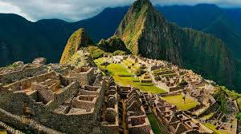
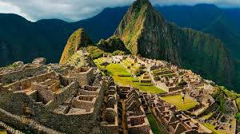

3 faqts about nepals
N1 Home to Mount Everest: Nepal is famous for Mount Everest, the highest peak in the world.
Nepal is a multiethnic, multilingual, and multicultural country.
Nepal is known for its legendary Gurkha soldiers, famous for their bravery and combat skills.
3 faqts about peru
Peru is famous for the ancient Inca city of Machu Picchu, a UNESCO World Heritage Site and one of the New Seven Wonders of the World.
Peru is a global culinary hotspot, known for dishes like ceviche and unique ingredients such as quinoa and potatoes.
A significant portion of Peru is covered by the Amazon rainforest, offering incredible biodiversity.
3 faqts about japan
Advanced Technology and Tradition: Japan is renowned for its cutting-edge technology and traditional cultural practices like tea ceremonies.
Unique Geography: Japan is an island nation made up of 6,852 islands, with four main ones: Honshu, Hokkaido, Kyushu, and Shikoku.
Japan is globally recognized for its cherry blossom season.